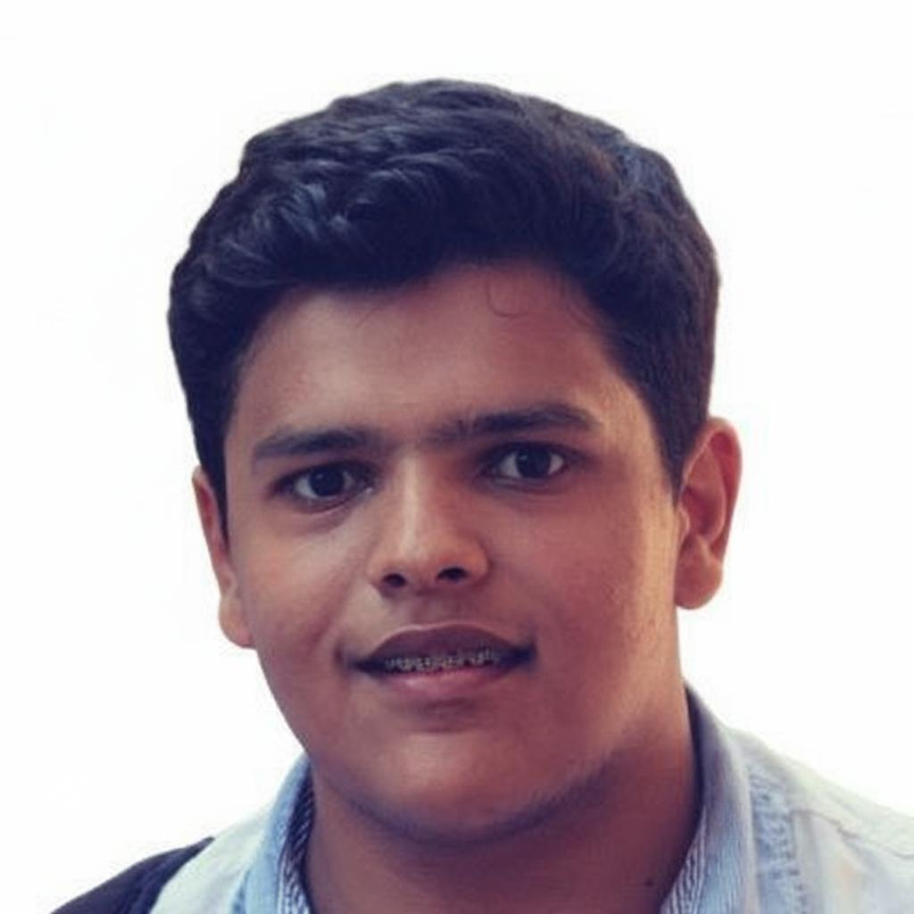
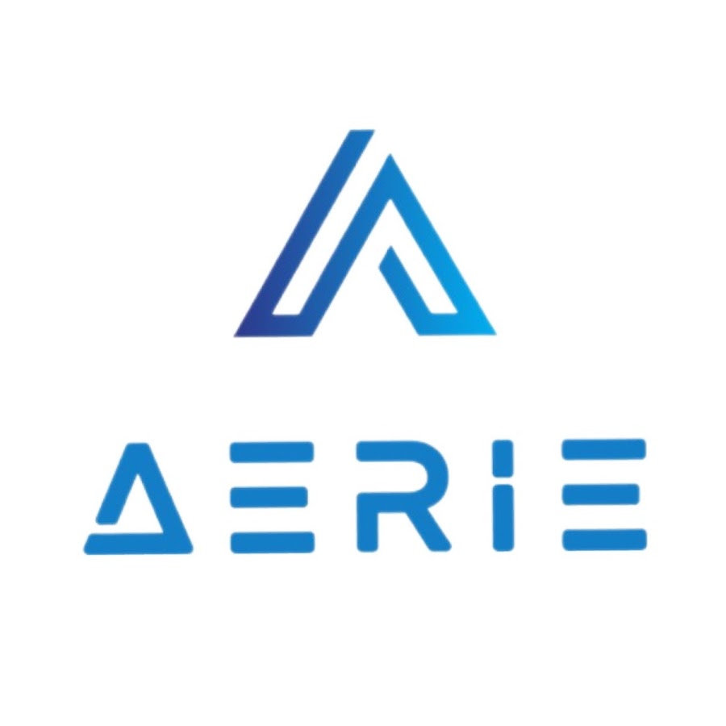
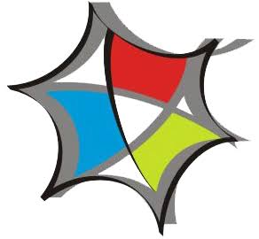
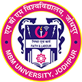

Bio
Naitik Sharma is an architect and computational designer currently pursuing a Master of Arts in Architecture at CITA, Royal Danish Academy.
His work explores computational design, digital fabrication, circular construction and material systems, with a particular interest in how digital tools can support material reuse, fabrication and adaptive construction.
His background combines professional architectural practice with parametric workflows, environmental analysis, BIM interoperability, machine learning and computational research.
Selected experience
-

2026–Current
Computational Design Instructor
Aerie Academy -
 2022–2025
2022–2025
Architect + Computational Designer
Studio Symbiosis, New Delhi -

2020–2021
Executive Architect
Hexagramm Design Pvt. Ltd.
Education
-
 2025–2027
2025–2027
Master of Arts in Architecture
CITAstudio, Royal Danish Academy -
 2021–2022
2021–2022
Master’s in Advanced Computation & Design
IAAC, Barcelona -

2013–2018
Bachelor’s in Architecture
MBM Engineering College / JNVU University